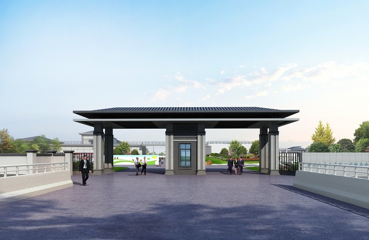
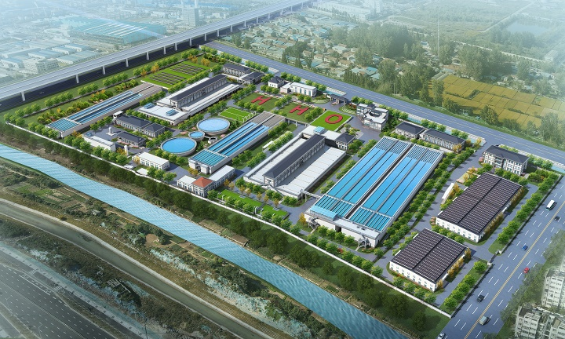
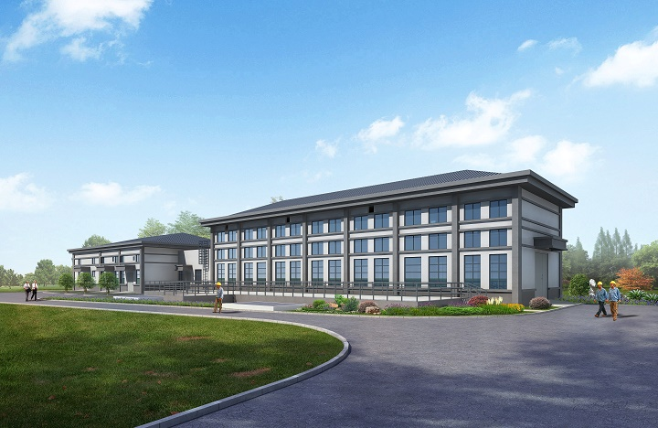
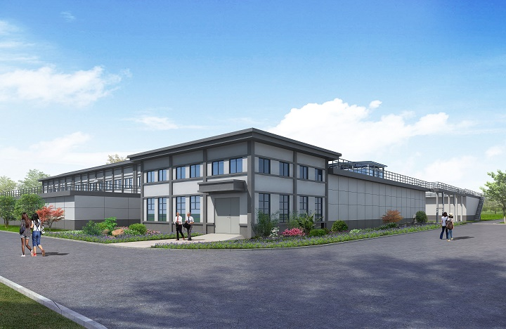
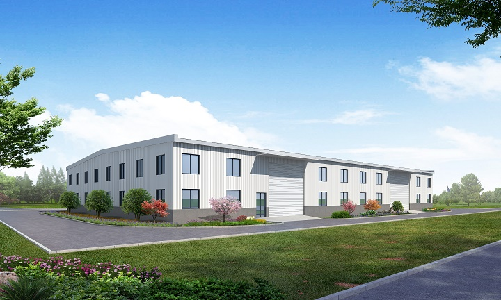
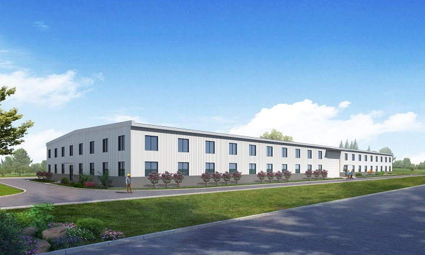
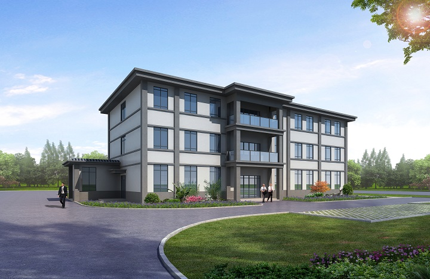

中国水利水电第七工程局
淮安城南水厂扩建工程

（城南水厂大门效果图）
淮安自来水有限公司城南水厂扩建工程土建及安装工程（以下简称：城南水厂项目）位于淮安市清江浦区城南街道西南部文化路99号。本次城南水厂扩建工程建设内容主要包括：扩建厂区内新建净水系统一套，既有厂区内净水系统改造一项，浑水管道工程一项，场内附属工程施工一项。

（城南水厂整体效果图）
新建净水系统主要包括：新建预臭氧接触池+机械混合折板絮凝平流沉淀池+清水池、后臭氧接触池及反冲洗气房、组合滤池、送水泵房及变配电间、排水排泥池、业务用房、计量部、物资部的施工。
既有厂区改造主要包括：现状脱水机房改造，现状综合楼改造，新建配泥井，新建二氧化碳储站的施工，厚德桥拆除重建，门卫室拆除重建。
浑水管道工程主要包括：长度约5km的DN1600浑水管道敷设施工（其中明挖段约2.4km，顶管段约2.6km），取水口工程施工。
场内附属工程主要包括：既有厂区内构筑物拆除，雨污水管线工程，新建及翻建围墙，场内道路工程，景观绿化工程等。
以下是各建筑预览效果图




